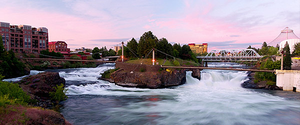

About Me
-
The Salad Days
January 16th 1985 - August 2003
I grew up in Spokane, WA.
-
Education

August 2003 - May 2007
Studied at Boise State University where I recieved my BFA in Graphic Design with an emphasis in Photography
-
Denver

May 2007 - August 2012
Worked in graphic design and fine foods retail while enjoying my quarter life crisis
-
NYC
August 2012 - October 2014
Worked in non-profit marketing and freelance graphic design. Rode my bike 20 miles a day. Hungout on roof tops. Dumpster dived. Learned how to live extremely efficiently.
-
Portland
October 2014 - Present
Worked at Stella Taco as FOH manager for a year. I decided to pursue coding training to change course and improve my future.
- Woodworking
- Drawing
- Photography